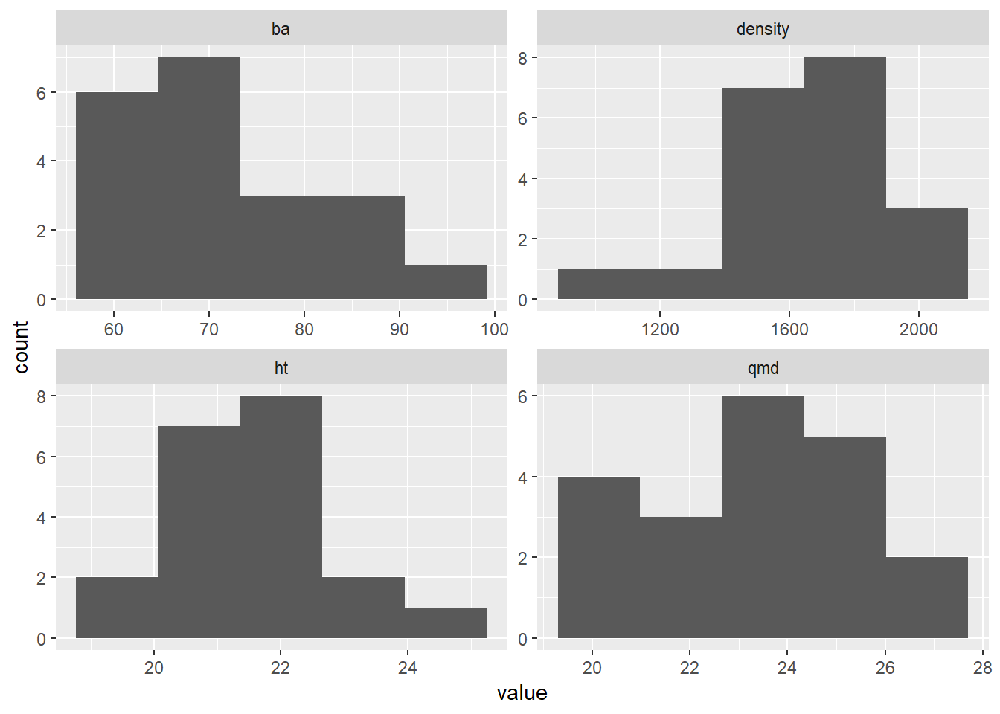

It has come up several times, the question as to whether or not the average treatment conditions can be considered equivalent for various metrics in their initial conditions. This should be apparent in some of the summary data for initial conditions, such as TPH, QMD and HT.
First, here is the summary table with just the initial conditions. These do not look substantially different.
kbl2 <- function(data, caption) {
data %>%
kableExtra::kbl(caption = caption) %>%
kableExtra::kable_styling()
}
d_l %>%
filter(year == "init") %>%
get_measures() %>%
make_summary(measures = c("dbh", "ht_p", "density", "ba", "dom_dbh")) %>%
kbl2(caption = "Initial summmary for all species")| measure | year | C40 | L40 | C80 | L80 | Control |
|---|---|---|---|---|---|---|
| QMD (cm) | init | 24.8 (3.1) | 23.3 (1.8) | 24.0 (1.3) | 22.1 (2.2) | 23.1 (0.6) |
| Height (m) | init | 22.0 (1.2) | 23.1 (1.2) | 20.2 (0.5) | 20.6 (1.0) | 21.5 (0.8) |
| Density (stems ha-1) | init | 1590.6 (418.0) | 1693.8 (181.0) | 1628.1 (160.2) | 1775.0 (120.3) | 1556.2 (191.1) |
| Basal area (m2/ha) | init | 74.9 (15.6) | 71.6 (4.0) | 73.7 (7.5) | 68.4 (13.0) | 65.0 (5.0) |
| Dominant DBH (cm) | init | 43.5 (7.5) | 39.7 (4.2) | 42.8 (6.4) | 40.7 (6.4) | 41.3 (5.4) |
How about when we do it by species of interest?
sum_rw <- d_l %>%
filter(year == "init") %>%
get_measures(species = "SESE3") %>%
make_summary() %>%
kbl2(caption = "Initial summmary data for redwood")
sum_df <- d_l %>%
filter(year == "init") %>%
get_measures(species = "PSMEM") %>%
make_summary() %>%
kbl2(caption = "Initial summmary data for Douglas-fir")We can see that basal area of redwood in the L40 and Control treatments seems to be much lower than in the others, although there is quite a bit of variability. Also, the variability between treatments is not consistent.
I’ll run some anovas to test if there are significant differences in initial data, for all species and for redwood and df separately, and these can be followed up with pairwise t-tests, with a Tukey adjustment.
# I need to get plot height data seperately, otherwise, get plot statistics
# for each measure of interest
plot_sum <- function(data, species = unique(data$spp),
years = unique(data$year))
{
a <- data %>%
filter(
spp %in% species,
live | status %in% c(15, 16),
year %in% years
) %>%
group_by(treatment, year, plot) %>%
summarise(
# I'm calculating BA (m^2/ha) by plot
ba = sum(dbh^2 * pi / 40000, na.rm = TRUE) * 12.5,
qmd = sqrt(mean(dbh^2)),
density = n() * 12.5
)
b <- data %>%
filter(
spp %in% species,
live | status %in% c(15, 16),
!get_cond(c(2, 3)),
tree_id %in% ht_id_2018,
!is.na(ht_p),
year %in% years
) %>%
group_by(treatment, year, plot) %>%
summarise(ht = mean(ht_p))
left_join(a, b) %>%
ungroup() %>%
pivot_longer(c(ba, qmd, density, ht), names_to = "measure")
}
# Run Dunn test and sort contrast the same as a Tukey test
my_dunn <- function(data) {
dunn_dat <- invisible(dunn.test::dunn.test(
data$value,
data$treatment,
table = FALSE,
method = "bonferroni",
altp = TRUE
))
dunn_dat <- as.data.frame(dunn_dat[c("comparisons", "altP.adjusted")])
Tu <- tidy(TukeyHSD(aov(value ~ treatment, data = data)))[["contrast"]]
Du <- gsub(" ", "", dunn_dat$comparisons)
Tu <- str_split(Tu, "-")
Du <- str_split(Du, "-")
O <- map_dbl(Tu, function(x) which(map_lgl(Du, function(y) all(x %in% y))))
dunn_dat[O, ] %>% rename(D_compare = comparisons, D_pvalue = altP.adjusted)
}
# coercion from matrix to table, and table to dataframe results in pair-wise
# list
my_pairwise_w_test <- function(data) {
w_dat <- pairwise.wilcox.test(
data$value,
data$treatment,
p.adjust.method = "bonf")
w_dat <- w_dat$p.value
subset(as.data.frame(as.table(w_dat)), !is.na(Freq)) %>%
mutate(comparisons = paste(Var1, Var2, sep = "-")) %>%
select(W_compare = comparisons, W_pvalue = Freq)
}
test_sum <- function(.x) {
capture.output(
test_df <- .x %>%
nest_by(year, measure) %>%
mutate(
aov_mod = list(aov(value ~ treatment, data = data)),
aov_p = summary(aov_mod)[[1]][1, 5],
Tukey = list(
select(tidy(TukeyHSD(aov_mod)),
T_compare = contrast,
T_estimate = estimate,
T_pvalue = adj.p.value
)
),
KW_p = kruskal.test(value ~ treatment, data = data)[["p.value"]],
Dunn = list(my_dunn(data)),
Wilcox = list(my_pairwise_w_test(data))
) %>%
select(-c(data, aov_mod))
)
return(test_df)
}The assumption with t-tests is that that data are normally distributed. I’m not sure I’m able to confirm this assumption with only 4 replications per treatment. It might be important to perform non-parametric significance tests.
plot_sum(d_l, years = "init") %>%
ggplot(aes(value)) +
geom_histogram(bins = 5) +
facet_wrap(~measure, scales = "free")
In addition to anova and t-tests, I’ll also use Kruskal-Wallis rank-sum tests and the Dunn and M-W-Wilcoxon post-hoc tests. I don’t think anovas and t-tests are reliable with only 4 data points.
plot_sum(d_l, years = "init") %>%
test_sum() %>%
select(-c(Tukey, Dunn, Wilcox)) %>%
kbl2(caption = "omnibus test, both species")| year | measure | aov_p | KW_p |
|---|---|---|---|
| init | ba | 0.6413462 | 0.4713918 |
| init | density | 0.7131442 | 0.5330506 |
| init | ht | 0.0052571 | 0.0156338 |
| init | qmd | 0.4234122 | 0.4522951 |
plot_sum(d_l, years = "init") %>%
test_sum() %>%
filter(KW_p < .05) %>%
select(-c(aov_p)) %>%
unnest(c(Tukey, Dunn, Wilcox)) %>%
kbl2(caption = "Post-hoc tests, both species")| year | measure | T_compare | T_estimate | T_pvalue | KW_p | D_compare | D_pvalue | W_compare | W_pvalue |
|---|---|---|---|---|---|---|---|---|---|
| init | ht | H40-C | 0.4725702 | 0.9548160 | 0.0156338 | C - H40 | 1.0000000 | H40-C | 1.0000000 |
| init | ht | H80-C | -1.3316493 | 0.3328852 | 0.0156338 | C - H80 | 1.0000000 | H80-C | 0.5714286 |
| init | ht | L40-C | 1.5678335 | 0.1981077 | 0.0156338 | C - L40 | 1.0000000 | L40-C | 0.5714286 |
| init | ht | L80-C | -0.9386632 | 0.6500970 | 0.0156338 | C - L80 | 1.0000000 | L80-C | 1.0000000 |
| init | ht | H80-H40 | -1.8042195 | 0.1108428 | 0.0156338 | H40 - H80 | 0.3646983 | H80-H40 | 1.0000000 |
| init | ht | L40-H40 | 1.0952633 | 0.5151086 | 0.0156338 | H40 - L40 | 1.0000000 | L40-H40 | 1.0000000 |
| init | ht | L80-H40 | -1.4112335 | 0.2817577 | 0.0156338 | H40 - L80 | 0.4216493 | L80-H40 | 0.5714286 |
| init | ht | L40-H80 | 2.8994828 | 0.0053063 | 0.0156338 | H80 - L40 | 0.0497285 | L40-H80 | 0.2857143 |
| init | ht | L80-H80 | 0.3929861 | 0.9765417 | 0.0156338 | H80 - L80 | 1.0000000 | L80-H80 | 1.0000000 |
| init | ht | L80-L40 | -2.5064968 | 0.0162380 | 0.0156338 | L40 - L80 | 0.0597727 | L80-L40 | 0.2857143 |
only ht has significant differences between treatments: L40 plots(pre-treatment) are on average about 3 m taller than H80. and L40 are about 2.5 m taller than L80. The Dunn test also found these contrasts significant, but the Bonferonni adjusted wilcoxcon rank-sum test didn’t detect any significance.
How about for redwood:
there are no significant differences.
plot_sum(d_l, years = "init", species = "SESE3") %>%
test_sum() %>%
select(-c(Tukey, Dunn, Wilcox)) %>%
kbl2(caption = "Omnibus tests, redwood")| year | measure | aov_p | KW_p |
|---|---|---|---|
| init | ba | 0.4433559 | 0.4844247 |
| init | density | 0.2337894 | 0.2333623 |
| init | ht | 0.2394289 | 0.1991483 |
| init | qmd | 0.7420638 | 0.9477593 |
plot_sum(d_l, years = "init", species = "SESE3") %>%
test_sum() %>%
filter(KW_p < .05) %>%
select(-c(aov_p)) %>%
unnest(c(Tukey, Dunn, Wilcox)) %>%
kbl2(caption = "post-hoc tests, redwood")| year | measure | Tukey | KW_p | Dunn | Wilcox |
|---|---|---|---|---|---|
And for Douglas-fir?
Differences follow the same pattern as for all trees, which makes sense because there were no differences among redwoods, but now the Kruskal-Wallis test doesn’t detect any significant effect, and neither do post-hoc tests.
plot_sum(d_l, years = "init", species = "PSMEM") %>%
test_sum() %>%
select(-c(Tukey, Dunn, Wilcox)) %>%
kbl2(caption = "Omnibus tests, Douglas-fir")| year | measure | aov_p | KW_p |
|---|---|---|---|
| init | ba | 0.0620930 | 0.0964031 |
| init | density | 0.3796860 | 0.2984002 |
| init | ht | 0.0305357 | 0.0775284 |
| init | qmd | 0.5099199 | 0.5180367 |
plot_sum(d_l, years = "init", species = "PSMEM") %>%
test_sum() %>%
filter(KW_p < .05) %>%
select(-c(aov_p)) %>%
unnest(c(Tukey, Dunn, Wilcox)) %>%
kbl2(caption = "post-hoc tests, redwood")| year | measure | Tukey | KW_p | Dunn | Wilcox |
|---|---|---|---|---|---|